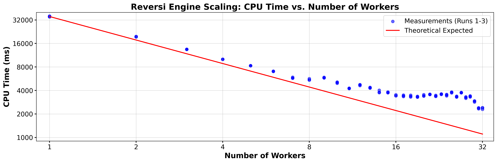

Scope
On this site you can play the game of Reversi in 2D or 3D, against a human, or one a number of AI players. You can also play a Tournament among AI players or run an Evolution to try to try to improve the ability of one of the AI players.
You can also develop your own AI players and see how they do against the built-in ones. The focus of this site, and the reason for creating is, to make it possible to play in 3D. But 2D is available also.
If you are up to it, or you feel adventurous, you can click right here (or on the main heading of this page) and start playing Reversi right away. Otherwise, read the information here and then proceed to the actual game page. It probably is best to open the game table in a different window and refer to it, and try things out, as you proceed. However, you can also see a static image of the game table here.
If you are familiar with my Mill game you will find that the Reversi game is organized similarly.
Comparison of Mill and Reversi
You can skip this section if you are only interested in the Reversi game. I developed the Mill game first and learned a lot in the process. While the organization and the basic approach for the two games are closely related, there are some significant differences:
- The main difference between the two games, and the reason for the existence of this Reversi site, is that this version of Reversi can be played on a three-dimensional board. You can manipulate and examine the board in a 3D display that is run by your system's video card. Utilizing the video card is a new experience for me.
- The branching factor in the Reversi Game is much greater than that in the Mill game. Static evaluations for the 3D version take significantly longer than for the 2D version of Reversi, or the Mill Game..
- However, the implementation of the basic algorithm, and efficient exploration of the current game tree, is much more efficient. On my system the Reversi code routinely achieves 100 or 99% utilization of the CPU.
- The genetic algorithm for AI improvements is much more sophisticated for the Reversi game.
- Some features of the Mill game, specifically the ability to play by a game clock, and the ability to use or create an opening book, were not implemented in the Reversi game. They did not appear to be crucial after I developed the Mill game.
- In the Mill Game, the C++ web assembly version heavily outperforms the JS version. The reason for this is that the Mill Game was written in idiomatic JS as I first learned it. In the Reversi Game the performance of JS and C++ are almost identical.
The Reversi Code is much more C++ like, in several aspects:
- Little or no Garbage Collection Overhead.
One of the biggest performance killers in JS is the Garbage Collector. Creating temporary objects for moves inside a deep recursive loop like α/β search causes memory churn. Once memory fills up, the engine pauses execution to clean it up.
In the Reversi JS code, memory allocation inside the search loop has been entirely eradicated. The use of global variables pre-allocates all necessary memory for the maximum search depth upfront.
Instead of creating new arrays for the board state, the code swaps pointers instead for replacing objects. Because new nothing is allocated during the search, the JS Garbage Collector never fires.
-
Typed Arrays and Cache Locality.
Standard JS arrays are not continuous blocks of memory; they are essentially inefficient and expensive HashMaps that can accommodate objects of all kinds. This makes them more versatile and much less efficient.
By exclusively using Int32Array and Uint8Array to represent the board and the pre-computed lookup tables the JS engine is forced to allocate contiguous blocks of memory. This provides the exact same CPU cache locality as the C-style arrays used in the C++ file defining the Reversi engine. When the CPU fetches a board position, the next positions are already pulled into the L1/L2 cache, maximizing throughput.
-
JIT Compilation of Monomorphic Hot Paths.
The JS Reversi engine uses Just-In-Time (JIT) compilation. It monitors the code as it runs and compiles "hot paths" (frequently executed loops) directly into highly optimized machine code.
For the JIT compiler to do this effectively, the functions must be monomorphic, meaning the variables passed into them always have the exact same type. Because the α/β function strictly passes Typed Arrays and integers back and forth, the JIT compiler strips away all of JS's usual dynamic type-checking overhead. By the time the search reaches depth 4 or 6, V8 has likely compiled The α/β JS code into assembly code that looks almost identical to the compiled WebAssembly from the C++ file.
-
Inline Sorting.
Sorting moves is computationally expensive. The standard Array.prototype.sort() in JS requires passing a callback function, which introduces massive overhead when called millions of times. By implementing an inline descending/ascending insertion sort directly within the JS α/β search, that callback overhead is completely bypassed.
- There is just one version of the Mill Game. By contrast, there are several versions of the Reversi Game. You can play Reversi in 2D, or 3D, and on a 4x4, 6x6, or 8x8 board and its 3D analogs. Different AI players perform differently on different boards. There is a specialist for each type, as discussed below.
- As for the implementation of the Mill game, the efficiency of memory management and multiprocess`s utilization took a large chunk of the development time. The most computer intensive part of the game is the genetic algorithm to improve the parameters of an AI player. Memory issues led to a genetic algorithm that restarts fresh, essentially by reloading the game and engine, after each generation. Moreover, for quite a while the algorithm used to regularly crash my system and cause the computer to reboot. With the Help of Gemini, I was able eventually to trace this to a know issue with my particular Motherboard and CPU which I could fix by doing open heart surgery via the BIOS on my mother board. The system now routinely runs for days without crashing, and using 100% of the CPU. This is gratifying. Developing the Reversi software has been quite a ride!
The Rules of the Game
The game of Reversi (also known as Othello) is usually played on an 8x8 2D Board, as shown in Figure 1. The novel feature of this online version is that you can play it in 3D. But the easiest way to understand the rules is to start with the 2D rules. The transfer of those rules to the 3D case will be straightforward.
  |
| Fig. 1: Initial Board |
The game is played by two players, usually denoted as Black and White. However, when I first played Reversi many years ago the players were Red and Green and I have used that color scheme on this site. The players have a supply of markers (or pieces) that are red on one side and green on the other. Thus the markers can be reversed (or turned or flipped) and switch color.
Figure 1 shows the initial state of the 8x8 2D Board. There is a grid with 8x8 = 64 intersections. At the start of the game there are red markers on 4-5 (horizontal-vertical) and 5-4, and green markers on 4-4 and 5-5. The players take turns placing markers on the board. Their goal is to enclose contiguous chains of the opponents pieces between two pieces of their own. If they can do that the pieces in the enclosed chain change colors. The player with the most pieces at the end wins. For example, at the beginning, Red could play on 4-3 or 3-4 and flip 4-4, or play on 6-5 or 5-6 and flip 5-5.
The following four boards illustrate a possible sequence of the first four moves. The picture shows the status of the board after the indicated move.
 |
| Red places on 3-4 and flips 4-4 |
|
|
 |
| Green places on 3-3 and flips 4-4 |
|
|
 |
| Red places on 4-3 and flips 4-4 |
|
|
 |
| Green places on 5-3 and flips 4-3 and 5-4 |
|
|
Here is a list of specific rules:
- Starting with Red, the players take turns placing their pieces. The player whose turn it is is the current player, the other player is the opponent.
- Any stone placed by the current player must flip at least one of the opponent's pieces.
- The current player must play a legal placement if possible. If no legal placement is available the current player forfeits the turn, and the opponent becomes the current player.
- After each placement all of the opponent's
pieces contained in enclosed chains must be flipped.
- The game ends when neither player can make a legal move. The player with more pieces wins.
- The game is a draw if both players have the same number of pieces at the end of the game.
To illustrate some aspects of the game, note the following:
- once a piece is placed it may change color but it never moves, and it never gets removed from the board.
- Neither player may skip a valid move, or choose not to flip some of the opponent's enclosed pieces.
- As the game proceeds the number of red and green pieces undergo large swings back and forth. This gives an advantage to the last player. Any, potentially large, gain on the last turn cannot be undone by the opponent.
- If a player has no legal placement, and thereby forfeits that turn, the opponent effectively is able to place more than one piece at a time, which of course is a great advantage.
- Corners are very special. Once a player places a piece at a corner it will never change color there. Moreover, any connected chain that ends at a corner, or a point, that is connected to the corner by a chain, can no longer change color. Much of the game strategy consists of gaining corners (and making the set of non-changeable pieces grow) and preventing the opponents from gaining corners. Similar considerations apply to edges.
- Usually a game consists of 60 (64 board points - the four points occupied from the beginning. But since a player may have to forfeit a turn it may take longer, and it may also end early with empty spots left on the board, but no legal placements being available for either player. For example, if it was Green's turn in the last board of the above sequence, Green could play 3-5. As a result, all pieces would turn green, neither player would have a legal move available, and the game would end with nine green pieces, and zero red pieces.
The 3D Game
The 3D game is played exactly like the 2D game, except that now there are more neighbors for each point, and the chains of enclosed pieces can run in more directions. In fact, the number of directions increases from 8 to 26 neighbors. To see this note that an interior point and its neighbors in the grid form a 3x3x3 cube which contains 27 points. The innermost point is not a neighbor of itself, so that point has a total of 33-1=27-1 = 26 neighbors, each corresponding to a potential chain of enclosed opposing pieces. (On the 2x2 board we have 32-1 = 8 neighbors, and in n dimensions we have 3n-1 neighbors. You can place pieces in a three dimensional array by using the interactive 3D display or in a two-dimensional cross section of the board.
User's Guide
You can start the game right here. If you wonder what a specific control does you can hover over it and see a one or two word explanation pop up. However, you may prefer to read the detailed information below to know what this software does and get an idea of how it works.
Game Boards and Controls
The Table with the controls, the 3D game board, and three Cross sections by default measures about 1631 by 1039 pixels. This is quite large (certainly unrealistic to be used on a smartphone) but it fits on most modern lap or desktop screens. You may need to change the resolution setting on your screen to accommodate the whole table. You can also shrink the size of the table in the line labeled Scale:. Click on "<" or ">". See below for more information.
The default game table, meant for playing 3D Reversi, consists of three columns. The first column contains the game controls. The second consists of three cross sections, each of which is perpendicular to one of the three axes. The third column contains the three-dimensional board. You can also toggle the display to play in just two dimensions (by clicking on the button in the second row of the control column). In that case the middle column (with the cross sections) disappears and the game board turns two dimensional.
Playing the Game
Players may be human or one of ten AI players. To play a game select the participants int the lines labeled Red: and Green: , and then clock on the Play button in undo the fifth row of the control column (and originally labeled Play. Pieces that are already marked are shown as red or green circles in the 2D displays, and as red or green balls in the 3D display. Also present by default are smaller red or green circles or Balls whose colors indicate whose turn it is, and where that player can legally place a marker.
The 3D Game Board
The 3D game board is moving in space initially to suggest that this is an interactive 3D display, and you can manipulate the game board to help you visualize the 3D game state. Specifically, you can:
- Left-click anywhere in the display to stop its movement. You can also toggle the movement by typing w or W anywhere in the game table.
- Left-drag the display to rotate the 3D board and view it from any angle.
- Middle-drag to zoom in or out.
- Right-drag to move the board.
- Cycle the grid from blank to parallel to the axes (the default) to showing all 26 directions,by using the keyboard command 'a'.
- Turn the board full-screen with the keyboard command 'f' or 'F'. Repeat, or use Escape key or the space bar to exit full-screen.
- Type a period or a question mark to see a complete list of available keyboard commands. Repeat to remove that list.
The 2D cross-sections
You can also place markers on the 2D crosssections. There is one crosssection for each axes. You can toggle a display of the axes in the 3D board by typing 'A'. The radio buttons underneath each 2D board let you choose which of the possible crosssections is being displayed.
The Control Column
This section contains a description of the available controls, listed from top to bottom.
- Reversi... This gives the current version number of the software (version 10 as of this writing) and indicates whether the engine is JS (JS) or WASM (C++) based.
The number of workers indicated the maximum number of concurrent threads run on your machine.
- 3D/2D This button let's you switch back and forth between the 2D and the 3D display. You can accomplish the same using the keyboard command '2'.
- Click here... Click here to see this page.
- Play...This line contains four items:
- The actual play button. This starts or stops a single game. The label and color of the button change with the status of the game.
- Reset This button interrupts and resets any ongoing game, tournament, or evolution. It has no impact on settings like search depths, AI players, etc. To rest the game Table to all of its original settings reload the web page. To exit the game board close the web page.
- N is the size of the board. Possible choices are 4, 6, or 8. The default is 6. Playing on a 4x4x4 board is very different from playing on a larger board since corners can be occupied in the first move. Playing on an 8x8x8 board takes a very long time since a typical game runs for 504 placements. As far as strategy and actual game play, a 6x6x6 board is sufficiently rich and there appear to be no general new features when going to an 8x8x8 board.
- <0> >> These buttons let you scroll through ANY ONGOING game. You can also go to any move by entering its number in the text field. The button labeled >>" takes you back to the current game state. You can continue the game from any previous game state, and you can change parameters like the player or the search depth. To avoid accidentally messing up the game, using any of these facilities interrupts the game. When you are ready to continue from the currently displayed state press the Play button.
- Red: and Green: The next two rows let you pick each player. The default is Human, the pieces are paced by left-clicking on an eligible spot on one of the game boards. You can also choose one of ten AI players, described below. The AI player proceeds by evaluating boards as described below, and looking a number of plies (half movers, i.e., placements by just one player) ahead. The number of D of plies is set with the menu on the right side of that row. The greater the depth the more time is spend by the AI. The choice of D has no impact on any human player.
-
The next two rows contain two textfields that give information about the current status and processes. The first (initially labeled Ready to Go ) gives the current score of any ongoing game, or states that an evolution or a tournament is in progress.
- The second, larger and scrollable, textfield gives more detailed information. Any log output goes to the game console (invoke it with CTL-Shift-J) by default is duplicated in this textfield. You can turn of the duplication by clicking on the Logs button described below.
- Value, Moves, D The value button prints the numerical score of the current board position to the console and the large status window. The Moves button similarly lists the available moves and their respective scores. The available best moves are shown as large yellow circles or balls in the 2D and 3D displays. (Note, however, that at the beginning of a game the software checks moves for symmetry and lists only one of each group of equivalent moves.)a
The depth menu D=in that row determined the depth at which the scores and the moves are computed.
- Scale: W:
- The Scale controls change the size of the 3D display. They can be used to adjust the size of the board to your particular computer. If the height of the board becomes larger than the height of the control column becomes scrollable. For the best experience you want to keep the scale large enough to accommodate the full control column.
- The textfield labeled W: lets you specify the number of simultaneous threads, called Workers in JS, used by the code. This is a crucial parameter. The software queries your system for the maxim number of available threads, and then uses up to that number of threads simultaneously. There may be circumstances where you may want to reduce that number. For example, you may be using your computer for other compute intensive tasks at the time. You can find a more detailed discussion of parallel processing below
Fullscreen, Infinity This row is effective only in 3D Mode. Clicking on Fullscreen will make the 3D display occupy the entire screen. You cab also enter or exit full screen mode by typing f or F on the 3D screen. (Typing a period will give you a complete list of keyboard commands.) By default the display shows the 3D board as it would look from a point near the board. You can zoom in or out with the middle mouse wheel. Clicking on Infinity will change the display to the view from infinity, i.e, there is no perspective at all. (You can still enlarge or reduce the size of the display with the middle mouse button.
Hints, Axes, Hover, Cats, Vals The buttons in the next two rows let you toggle the following number of display items. If the color of the button is green that time is effective, otherwise the color is Gray. All five buttons toggle the corresponding feature.
- Hints: These are on by default. The system will show you the points where the current player can play as small red or green balls or circles.
- Axes: As you may expect, this will draw the x, y, and x axes in the 3D display.
- Hover When active, this will show you the coordinates of a marker location by hovering above the point.
- Categories: Crucial for AI playing is the location of a point. Corners are best, points next to a corner are bad, for example. There is more information below. This button will mark the various categories by colored balls in the 3D display.
- Values: : This is a similar display, but linked to a specific player, by default the player selected in the evolution menu.
Grid: lets you choose the kind of grid drawn on the 3D screen. You have the following options:
- none: No grid lines at all.
- Orthogonal The default: All grid lines parallel to one of the axes are show.
- Grid lines in all 26 directions are shown. This makes for a rather dense display, but you can have a psychedelic experience by watching the 3D board rotate in space for a while...
α/β, S, Random: These buttons turn certain features on and off. For regular play, however, it is best to keep all of them active.
- α/β The AI plays by evaluating all possible play up to a certain depth, and finding the move that gives the best score to the current player. The number of positions (nodes in the game tree) that needs to be explored can be reduced dramatically using the α/β algorithm. Turning it off will greatly increase the time taken for each move.
- At the beginning many moves are equivalent by symmetry. With this feature turned on equivalent moves are identified and namely one of them is considered. For example, at the first move (ply) there are only two possibilities, moving in the direction of a coordinate axes, or playing a corner in the 4x4x4 cube containing the center. On the 4x4x4 or 8x8x8 grid the sound kind of move is best, on 6x6x6 board it is worst since you are building a bridge to a corner for your opponent. Checking for symmetry is expensive, and it becomes less effective as the game proceeds. Thus it is turned off after the first time the symmetry check does not reduce the number of moves.
- Random: When selected the system chooses randomly among all moves with the same highest score. Otherwise it picks the first. However, due to the vagaries of when workers finish their tasks, and how this affects the search for the best move, deactivating symmetry will not ensure that two subsequent games are identical.
Logs, Depths: These two buttons modify the logs printed to the Console and to the Control Panel. The console is a feature of your browse, and you can activate by typing CTL-Shift-J (and in other ways). I recommend you keep it open while you use this software. The specific effects of those two buttons are:
- Logs: On by default, this toggles the duplication of console output in the large status window in the control column, during a game. That duplication is turned off, regardless of the state of the button, during a tournament or an evolution. The reason for that is that the duplication requires the manipulation of a large and growing string which interferes with the efficiency of the algorithm execution.
- Depths: Off by default, this feature will print information about individual moves, including the time spent on it, and the number of times different levels of the game tree where visited. For example, if you have an AI compute the first move at search depth 8, you will find that with 32 workers the search takes about three seconds, and the algorithm visits a little more than two million nodes in the game tree.
B:, H: The two sliders in this row let you adjust the size of the marker and hint balls in the 3D display.
Import: The controls in this row let you import or export JS code defining the current AI players. Def resets the parameters to their built-in values.
Mob, Dif, Cor. ... Each of the parameters in the next two rows multiplies the difference in the corresponding numbers for the two players. Specifically,
AIs are determined by the following multipliers:
-
Mob
(mobility): the number of possible moves.
- Dif (Piece Difference): the number of markers on the board.
- Core The number of pieces occupying a corner.
- C-SQ The number of edge pieces occupying a point next to a corner. This factor is negative, you don't want to build a bridge for your opponent leading to a corner.
- X-Sq number of pieces diagonally adjacent to a corner.
- Edg (Edges) Pieces ON an edge but not adjacent to a corner.
- IEd (inner Edges) Pieces that are adjacent to an edge and not in a previous category.
- Fac (Faces)Surface Pieces on the boundary of the game cube and not being adjacent to an edge or a corner.
- IFa Pieces exactly one step inward from a face and not in a previous category. This parameter does not play any role in the 2D version.
The textfields corresponding to these categories show the numerical values corresponding to the player specified with the menu on the left in the next row. You can change the values of those textfields, and change the behavior of the corresponding AI.
Evolve: Clicking on this button will start a genetic algorithm to improve the player chosen with the menu next to the button. The algorithm will apply random mutations, run tournaments among the various mutations, and allow the best performers to survive. Whenever a new mutant is found that's superior to each of its predecessors a file with the JS code defining the parameters will be uploaded to your system. The three textfields in this row let you specify the maximum number of generations, the number of games in each tournament, and the maximum percentage of the random mutations. The depth of the tournament games is set with the same menu as the depth of tournaments, on the right in the bottom row of the control column.
Run Tournament The last two rows in the control column let you conduct a tournament among the selected AI players. The menu in the last row let you choose the depth of the AI searches in each game, and the textfield to the left of that menu let's you specify the number of games per pairing.
Parallel Processing
Modern computers usually have a number of cores, or CPUs, and can run several threads simultaneously. This is known as parallel processing, which JS handles by passing messages between the main thread and each of the individual sub threads, which in JS are referred to as workers. The issues involved in parallel processing are complex. The default number of workers in this software is the maximum number that your system can support. If your system does not provide this information, then N is set to 4. However, you can set the value in the text field equal to any positive integer. The system will create as many workers as you specify, and then use them all if it can.
My own system provides 32 threads. When running a tournament or an Evolution the system frequently runs at a CPU utilization of 100 percent. However, the savings as far as the time required for the computation of a move, and the number of nodes visited, is not nearly as dramatic.
To illustrate this I had the system compute the first ply on the 6x6x6 board at depth 8, with the number of workers ranging from 1 to 32. JS does not let you measure CPU time accurately, and CPU time is of limited utility when running processes simultaneously. The times shown here are wall-clock time measured in milliseconds. However, other than routine system tasks, there were no other processes running on the system at that time. This chart shows wall-clock time plotted against the number of workers, on a log-log scale:

The red line shows what one would naively expect. Thus when using W workers, the CPU time should be T/W where T is the time taken by one worker. The fat looking dots represent the actual wall clock time taken by three separate runs. The fact that those three times are very similar for each number of workers indicates that the shape of the curve formed by the dots is not random. Thus increasing the number of workers in some circumstances actually increases the time used for the calculation. The reason for this is that the evaluation of some positions takes longer than others, and if the number of computer intensive positions is concentrated on a small number of workers the time required will increase. Of course, the precise values of the individual worker times depend on the current position.
The AI algorithm
A rudimentary understanding of how the computer plays is useful for understanding how to use the controls. Here is an extremely terse introduction: The moves available to the computer form a tree rooted at the current board position. The computer examines that tree to a certain depth. It uses a formula (the static evaluation) to assign a value to each relevant leaf of the tree. It then determines which best static value the player can obtain with perfect play, and makes the required move.
There are many references to time on this page. A JavaScript code running in a browser has no facility to measure the amount of time used by the CPU, and in any case, the concept of CPU time becomes ambiguous when using parallel processes. All times in these notes are elapsed wall-clock time, but care was taken to ensure that they are measured only when the computer was essentially doing nothing but running the Reversi software. As a result, those stated times are reasonably comparable and reproducible on the particular machine they were obtained.
The following Table illustrates the performance of the computer algorithms on my particular Windows 11 machine. The software offers two engines, one written in JavaScript (JS), and one written in C++. As discussed above, the JS engine performs essentially just as well as the C++ engine, which is a significant difference between the Mill and the JS codes.
Note that, while the JS version works with essentially any browser, the C++ engine may not work on your particular computer. It requires a compiled version of the C++ code that is part of the package.
The Table shows the time and the number opf nodes visited in the Game Tree, for the computation of the first move on the 6x6x6 board, at depths running from 2 to 14 plies (i.e, half moves, move by just one player), employing 32 workers.. There are two blocks in the Table, the first one corresponding to the C++ engine, the second corresponding to the JS engine. The Table shows data for a computation of the first move. The row headed Nodes gives the number of nodes of the tree visited by the code for this particular depth. This number is only a little larger than the number of leaves where the static evaluation is performed. The next row gives the Time measured in milliseconds (ms). The third row of each block, Nodes/Time, gives the number of nodes that were visited each millisecond. The row labeled Time Factor gives the ratio of the time for the current depth and the time for the preceding depth. It is a measure of the branching factor, i.e., the average number of nodes attached to a single node two levels higher in the tree.
It is evident that JS and C++ have similar performances, and that the branching factor 20. It seems reasonable for a human to play against an AI at a depth of 8 or 10 (looking ahead 4 or 5 moves). This will make the computer move in a few seconds or minutes. Human players of course can take any amount of time they wish.
AI Players
{kind=link}